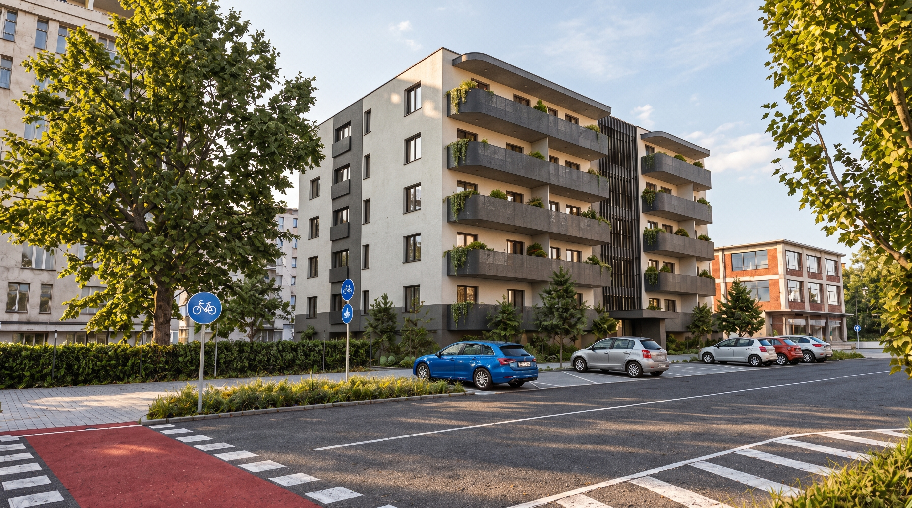
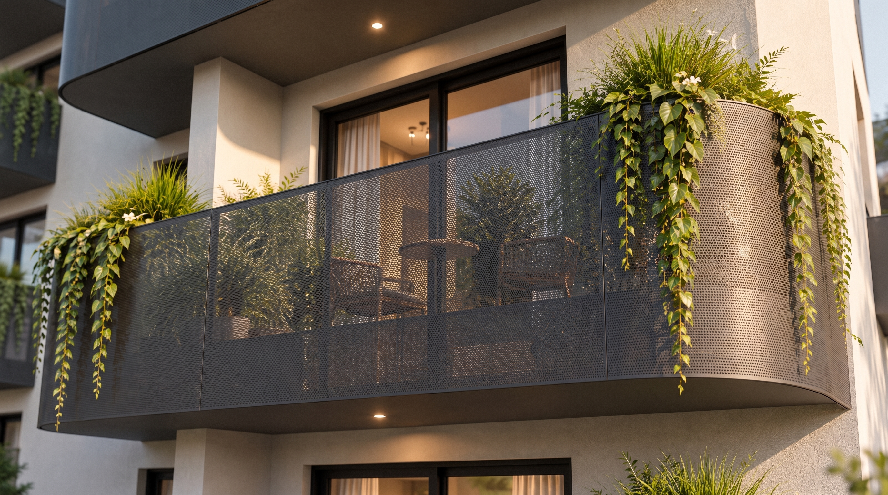
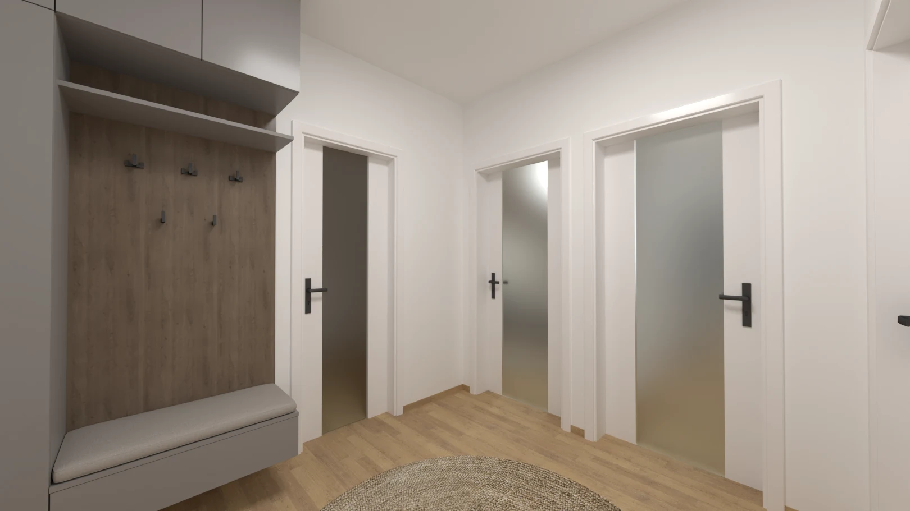
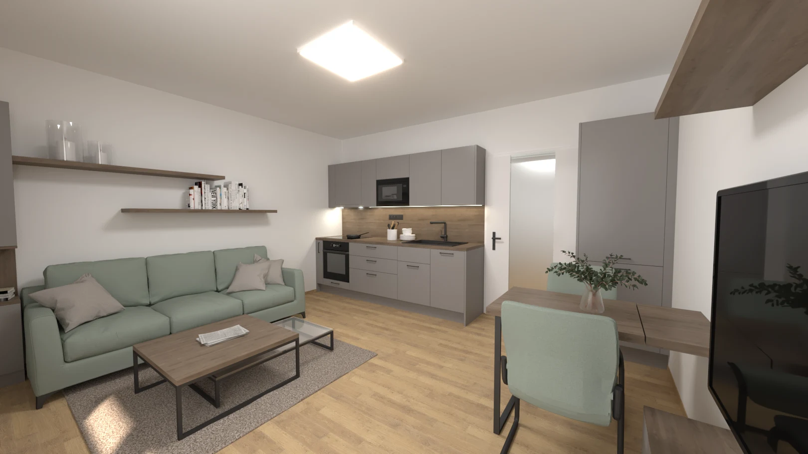
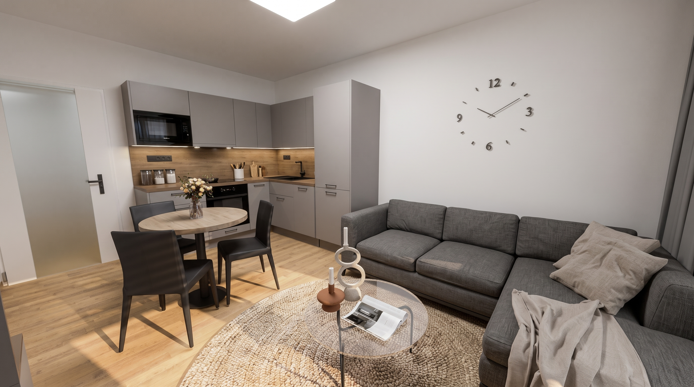

Vizualizace ukazuje možnost zařízení. Kuchyňská linka, domácí spotřebiče, nábytek a předokenní žaluzie nejsou součástí prodejní ceny. Rozsah dodávky konkrétního bytu najdete v přehledu vybavení v ceně.
Obsah storyboardu
Kreativní koncept / 18. října 2026
REZIDENCE
Alexandra.
Místo pro váš vlastní rytmus.
OTROKOVICE
Značka · Film · Reklamní série Storyboard podle dodaných podkladů
Návrh pro produkci / distribuce není spuštěná

GOOGLE GEMINI · AI VIZUALIZACE Z PROJEKTOVÉ REFERENCE
REZIDENCEAlexandra
01 / Výtvarný směr
01 IDENTITA
Architektura. Světlo. Vlastní rytmus.
Motiv vychází z konkrétního domu: světlá omítka, tmavé perforované balkony, centrální lamely a zelené akcenty. Vlastní identita staví na klidné kompozici a čitelném prostoru.

Detail domu jako vizuální podpis
AI vizualizace Google Gemini podle zdrojového detailu. Výsadba a standard k potvrzení.
Místo pro váš vlastní rytmus.
Osobní a srozumitelné„Prohlédnout byty“, poté konkrétní půdorys a dostupnost na dotaz.
Přirozené měřítkoReálná stavba a městské okolí. Materiál, prostor a denní světlo bez změny architektury.
Střídmá typografieSerif pro identitu. Čitelný grotesk pro čísla, dispozice a ovládání.
Omítka #F3EFE7
Antracit #252923
Šalvěj #A1AC99
Teplý dub #B29A79
REZIDENCEAlexandra
02 / Film 30 sekund · 16:9
01–02 00:00—00:10
Nejdřív místo. Potom detail.
Otevíráme celkem, který vysvětlí skutečnou stavbu a její okolí. Jemný pohyb soustředí pozornost; nevytváří nové pohledy mimo referenci.
0100:00 — 00:05
CELEK / MÍRNÉ PŘIBLÍŽENÍ
Rezidence Alexandra OTROKOVICE
Váš prostor v Otrokovicích
Maximálně 3% přiblížení z původního směru. Beze změn oken, podlaží, sousední budovy nebo silnice. Neodlétat do nezdokumentovaného okolí.
„Každý den má svůj rytmus.“
AI snímek: hero-golden.jpg · zdroj: přední levý pohled bez bočních balkonů.
0200:05 — 00:10
DETAIL / STATICKÁ KAMERA
Materiál a měřítko
Téměř nehybný pohled na perforovaný kov, omítku a zeleň. Jen drobný pohyb listů. Stejné zaoblení, otvory, členění skla a světla.
„Najděte prostor pro ten svůj.“
AI snímek: balcony.jpg · vychází z dodané vizualizace balkonového detailu.
REZIDENCEAlexandra
02 / Film 30 sekund · 16:9
03–04 00:10—00:20
Od příchodu ke každodennosti.
Používáme skutečné návrhy interiérů: předsíň 2+kk a obytnou část 1+kk. Záběry zůstávají samostatné; střih nepředstírá průchod jedním konkrétním bytem.
0300:10 — 00:15

PŘEDSÍŇ 2+kk / JEMNÝ POHYB VPŘED
První krok domů
Maximálně 2% přiblížení. Dveře zůstávají zavřené; rozměry, úložné prvky i podlaha jsou stálé. Kamera neprochází do domyšlené místnosti.
„Od prvního kroku domů…“
Reference: první strana Interiér vizualizace.pdf / 2+kk.
0400:15 — 00:20

OBYTNÁ ČÁST 1+kk / 2% PŘIBLÍŽENÍ
1+kk · 2+kk · 3+kk
Chvíle, které patří vám
Přirozené měřítko studia. Stejná kuchyň, dveře, pohovka, police a stůl. Zjemnit světlo a povrchy; místnost se nezvětšuje.
„…až po chvíle, které patří jen vám.“
Reference: první strana Interier vizualizace.pdf / 1+kk.
REZIDENCEAlexandra
02 / Film 30 sekund · 16:9
05–06 00:20—00:30
Prostor pro život. Pozvání k prohlídce.
Obytná část 3+kk představí další způsob uspořádání. Návrat ke stejnému celkovému pohledu uzavře film jasným dalším krokem.
0500:20 — 00:25

OBYTNÁ ČÁST 3+kk / KLIDNÝ ZÁBĚR
Bydlení do detailu
Stálý pohled na kuchyň, kulatý jídelní stůl a rohovou pohovku. Žádné rozšíření prostoru ani změny nábytku. Nezaměňovat za garantovaný standard.
„Prohlédněte si bydlení do detailu.“
AI snímek: living.jpg · reference: první strana interiérového PDF / 3+kk.
0600:25 — 00:30
Alexandra. VÁŠ PROSTOR V OTROKOVICÍCH. rezidencealexandra.cz
Začněte prohlídkou
Stejná architektura a perspektiva jako v úvodu. Poslední dvě sekundy stabilní. Název, doména a akce „Prohlédnout byty“ vzniknou až při sazbě.
„Rezidence Alexandra. Váš prostor v Otrokovicích.“
Finální adresu webu a funkční příjem poptávek ověřit před publikací.
REZIDENCEAlexandra
03 / Film 15 sekund · 9:16
15″ VERTIKÁLNÍ VERZE
Čtyři obrazy. Jeden jasný krok.
Krátký film funguje i bez zvuku. Každý obraz má vlastní ořez. Stavbu neroztahujeme; závěrečný obraz ukazuje celý dům v navrženém rámu.
03 / Představa života Zdrojové zařízení je ilustrativní.
11—15 s
REZIDENCEAlexandra.OTROKOVICEPROHLÉDNOUT BYTY
04 / Závěrečná karta Proklik na přehled bydlení.
Před exportem zkontrolovat bezpečné zóny konkrétního umístění. Obrazy jsou pracovní kompozice storyboardu; nejde o čtyři hotová videa.
REZIDENCEAlexandra
04 / Tři reklamní koncepty
A–C KAMPANĚ
Od prvního dojmu ke konkrétnímu bytu.
Jednotná identita, odlišná otázka v každé kreativě. Texty nevyužívají neověřenou cenu, výnos ani umělou nedostupnost.
REZIDENCE ALEXANDRA / OTROKOVICE
Místo pro váš vlastní rytmus.
A / Architektura a identitaPoznejte dům, interiéry a dispozice. První vstup do příběhu projektu.Objevit projekt
JAKÝ PROSTOR SEDÍ VÁM?
1+kk2+kk3+kk
Začněte půdorysem.
B / Srozumitelný výběrProhlédněte si dispozice a zjistěte aktuální dostupnost vybraného bytu.Prohlédnout dispozice
NÁVRH INTERIÉRU / ALEXANDRA
Bydlení zblízka.
C / Prostor v detailuOd půdorysu k prostoru. Podklady a konzultace k vybranému bydlení.Zjistit více
REZIDENCEAlexandra
05 / Fakta a otevřené údaje
✓ JEDEN ZDROJ PRO CELÝ PROJEKT
Krásný obraz. Přesné informace.
Počet jednotek vychází z řádků seznamu, ne z nejvyššího čísla bytu. Nevyplněná dostupnost znamená „na dotaz“. Varianta fasády musí být jednotná v celé prezentaci.
Doložené v dodaných podkladech
51
evidovaných jednotek
1–6
nadzemní podlaží
31 / 15 / 5Rozdělení jednotek 1+kk / 2+kk / 3+kk v aktuálním XLSX.
Na dotazVšechny položky sloupce stav jsou prázdné.
6. 10. 2026Revize uvedená u půdorysů pater.
OtrokoviceLokalita podle projektové korespondence.
Potvrdit pro veřejnou verzi
Prezentace používá podobu bez bočních balkonů; technické detaily upřesní projektant.
Přesnou adresu a mapový bod.
Rozsah standardu, vybavení a příslušenství.
Ceny, jejich rozsah a aktuální dostupnost.
Harmonogram, kontakty a příjem poptávek.
Finální identitu a odborné srovnání modelu s plány.
Číslo 51 v této prezentaci neznamená 51 aktuálně volných bytů. Vizualizace interiéru není příslib dodání nábytku.
Zdroje: seznam bytů karty.xlsx · půdorysy pater · projektová korespondence · dodané exteriérové a interiérové vizualizace. Podrobná evidence a prompty jsou v dokumentu značky a kampaně.
REZIDENCEAlexandra
06 / Produkce a návrh distribuce
OD REFERENCE K PUBLIKOVÁNÍ
Jeden projekt. Souvislá prezentace.
Obrazy a video vznikají z konkrétních referencí. Nové úhly a prohlídka vycházejí z geometrického modelu. Každý výstup projde porovnáním s podklady.
01
Podklady a varianta
Potvrdit fasádu, fakta, standard a kontakty. Provázat seznam jednotek s aktuálními plány.
02
Obrazy a šest záběrů
Připravit čtyři reklamní obrazy, výřezy a šest samostatných videoklipů podle storyboardu.
03
Střih a web
30 s horizontálně, 15 s vertikálně, tichá webová smyčka. Funkční výběr bytu a kontakt.
04
Postupné uvedení
Po schválení testovat koncepty A/B/C. Vyhodnotit detail bytu, poptávku a domluvenou schůzku.
U Omni jsou výstupy 1080p a 4K podle dokumentace upscalované. Pětisekundové záběry vzniknou výběrem čistých úseků a střihem. Titulky a logo se doplní v postprodukci.
Co rozhoduje o převzetí výstupu
Stejný rastr oken, podlaží, otvory a balkonová varianta.
Stejné okolí, materiály a měřítko interiéru.
Bez deformací i v mezilehlých snímcích videa.
Čitelná mobilní sazba a správné označení vizualizací.
Návrh distribuce: první týden identita a film, druhý týden dispozice, třetí a čtvrtý týden detaily a FAQ. Mediální soubory a filmové exporty jsou součástí této sady. Distribuce kampaně a zveřejnění webu se potvrzují samostatně.
REZIDENCEAlexandra
07 / Podoba domu
A NÁVRHOVÁ VIZUALIZACE DOMU
Bez bočních balkonů. Jedno rozpoznatelné místo.
Prezentovaná podoba levé strany domu vychází z dodaného návrhu bez bočních balkonů. Hlavní čelní balkony zůstávají součástí návrhu.
ABEZ BOČNÍCH BALKONŮ
GOOGLE GEMINI / AI VIZUALIZACE
Souvislá boční fasáda
Atmosférická úprava zdroje „1.přední levý pohled ( bez balkonu).png“. Soubor hero-golden.jpg. Hlavní čelní balkony zůstávají součástí obrazu.
Vygenerováno pomocí gemini-nano-banana-2.1. Geometrie k odbornému posouzení.
Celá prezentace používá stejnou podobu domu bez bočních balkonů. Vizualizace je návrhová a technické detaily potvrdí projektant.
REZIDENCEAlexandra
08 / Vygenerované pilotní klipy
▶ GOOGLE GEMINI OMNI 1.1 FLASH
Pohyb už existuje. Střih má svůj plán.
Níže lze přehrát skutečné vygenerované MP4. Jsou to samostatné klipy; hotové sestřihy 30 s a 15 s mají vlastní přehrávače na následující straně.
01 / Dům — film-exterior.mp4 · AI vizualizace Omni 1.102 / Balkon — film-balcony.mp4 · AI vizualizace Omni 1.103 / Interiér 3+kk — film-living.mp4 · AI vizualizace Omni 1.104 / Vertikální klip — film-vertical.mp4 · AI vizualizace Omni 1.1
Dostupnost souboru potvrzuje vygenerovaný výstup. Odbornou shodu architektury a dispozice je třeba posuzovat samostatně. Metadata a použité prompty jsou uložené vedle každého klipu.
REZIDENCEAlexandra
09 / Hotové filmové exporty
30″ / 15″ SKUTEČNÉ SESTŘIHY
Alexandra v pohybu.
Vygenerované záběry Google Omni jsou sestříhané, doplněné českou typografií a zvukovými přechody. Scénář voice-overu v předchozích kapitolách je návrhem další iterace.
30 s1920 × 1080 / 16:9
Prezentační film
Délka dle exportu 30,02 s. Obraz H.264, zvuk AAC. Vhodný pro web a horizontální prezentaci.
Hotový soubor potvrzuje produkční export, nikoli zveřejnění nebo spuštění reklamy. Všechny záběry zůstávají označené jako AI vizualizace podle projektových podkladů.